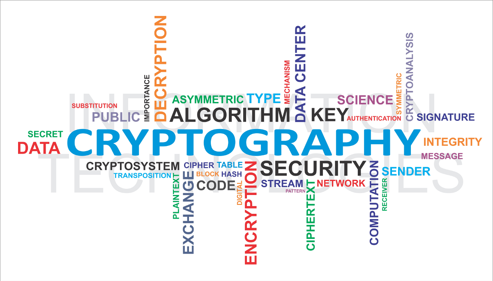

Enkripsi Simetris vs Asimetris
Kriptografi adalah pilar utama keamanan informasi. Ada dua metode utama yang sering digunakan:
1. Enkripsi Simetris: Menggunakan kunci yang sama untuk mengunci dan membuka data. Contoh populernya adalah AES (Advanced Encryption Standard) yang sangat cepat untuk data besar.
2. Enkripsi Asimetris: Menggunakan sepasang kunci (Public Key dan Private Key). Contohnya adalah RSA. Public key boleh disebar, tapi hanya Private key yang bisa membuka pesan tersebut.
Masa Depan: Blockchain
Teknologi Blockchain mengandalkan fungsi Hash (seperti SHA-256) untuk membuat rantai data yang tidak bisa diubah (immutability). Ini memastikan bahwa sekali data ditulis, tidak ada yang bisa memanipulasinya tanpa merusak seluruh rantai data.
← Kembali ke Blog